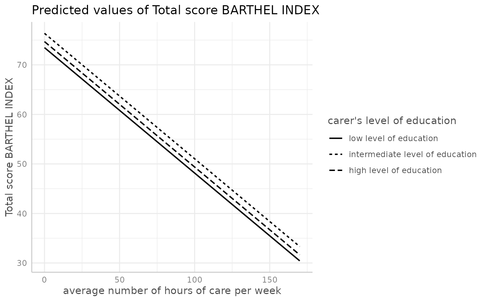
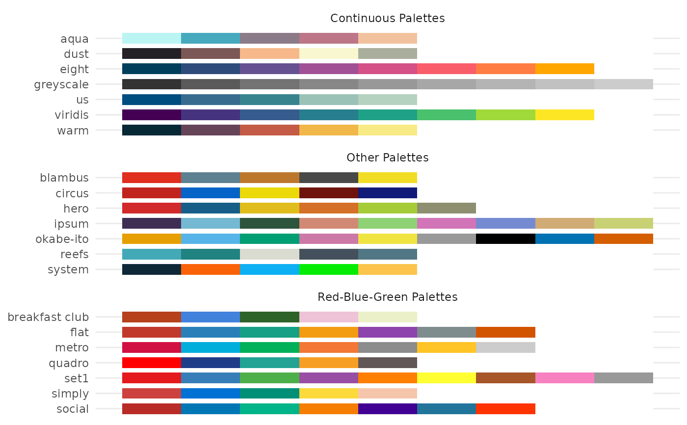

A generic plot-method for ggeffects-objects.
# S3 method for ggeffects plot( x, ci = TRUE, ci.style = c("ribbon", "errorbar", "dash", "dot"), facets, add.data = FALSE, colors = "Set1", alpha = 0.15, dodge = 0.25, use.theme = TRUE, dot.alpha = 0.35, jitter = 0.2, log.y = FALSE, case = NULL, show.legend = TRUE, show.title = TRUE, show.x.title = TRUE, show.y.title = TRUE, dot.size = NULL, line.size = NULL, connect.lines = FALSE, grid, one.plot = TRUE, rawdata, ... ) theme_ggeffects(base_size = 11, base_family = "") show_pals()
Arguments
| x | An object of class |
|---|---|
| ci | Logical, if |
| ci.style | Character vector, indicating the style of the confidence
bands. May be either |
| facets, grid | Logical, defaults to |
| add.data, rawdata | Logical, if |
| colors | Character vector with color values in hex-format, valid
color value names (see
|
| alpha | Alpha value for the confidence bands. |
| dodge | Value for offsetting or shifting error bars, to avoid overlapping.
Only applies, if a factor is plotted at the x-axis (in such cases, the
confidence bands are replaced by error bars automatically), or if
|
| use.theme | Logical, if |
| dot.alpha | Alpha value for data points, when |
| jitter | Numeric, between 0 and 1. If not |
| log.y | Logical, if |
| case | Desired target case. Labels will automatically converted into the
specified character case. See |
| show.legend | Logical, shows or hides the plot legend. |
| show.title | Logical, shows or hides the plot title- |
| show.x.title | Logical, shows or hides the plot title for the x-axis. |
| show.y.title | Logical, shows or hides the plot title for the y-axis. |
| dot.size | Numeric, size of the point geoms. |
| line.size | Numeric, size of the line geoms. |
| connect.lines | Logical, if |
| one.plot | Logical, if |
| ... | Further arguments passed down to |
| base_size | Base font size. |
| base_family | Base font family. |
Value
A ggplot2-object.
Details
For proportional odds logistic regression (see ?MASS::polr)
or cumulative link models in general, plots are automatically facetted
by response.level, which indicates the grouping of predictions
based on the level of the model's response.
Note
Load library(ggplot2) and use theme_set(theme_ggeffects())
to set the ggeffects-theme as default plotting theme. You can then use
further plot-modifiers from sjPlot, like legend_style() or
font_size() without losing the theme-modifications.
There are pre-defined colour palettes in this package. Use
show_pals() to show all available colour palettes.
Examples
library(sjlabelled) data(efc) efc$c172code <- as_label(efc$c172code) fit <- lm(barthtot ~ c12hour + neg_c_7 + c161sex + c172code, data = efc) dat <- ggpredict(fit, terms = "c12hour") plot(dat)# \donttest{ # facet by group, use pre-defined color palette dat <- ggpredict(fit, terms = c("c12hour", "c172code")) plot(dat, facet = TRUE, colors = "hero")# don't use facets, b/w figure, w/o confidence bands dat <- ggpredict(fit, terms = c("c12hour", "c172code")) plot(dat, colors = "bw", ci = FALSE)# factor at x axis, plot exact data points and error bars dat <- ggpredict(fit, terms = c("c172code", "c161sex")) plot(dat)# for three variables, automatic facetting dat <- ggpredict(fit, terms = c("c12hour", "c172code", "c161sex")) plot(dat)# }# show all color palettes show_pals()